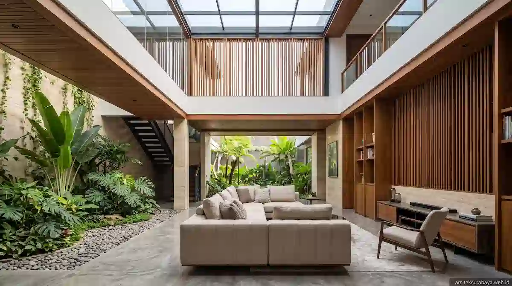

1. Mengapa Gaya Tropis Kontemporer Sangat Cocok untuk Surabaya?
Tinggal di Kota Surabaya membutuhkan strategi perancangan hunian yang cermat. Sebagai kota metropolitan pesisir dengan paparan sinar matahari yang terik dan tingkat kelembapan rata-rata yang cukup tinggi, rumah yang dibangun tanpa memperhitungkan aspek termal akan terasa seperti "oven" di siang hari. Kebanyakan pemilik rumah mengatasinya dengan menyalakan pendingin udara (AC) secara berlebihan sepanjang hari, yang berujung pada tingginya tagihan listrik bulanan.
Gaya arsitektur tropis kontemporer hadir sebagai jawaban paling ideal. Gaya ini tidak hanya menawarkan tampilan visual yang modern, tegas, dan mewah, tetapi juga berfokus pada solusi rekayasa iklim secara alami. Tim Arsitek Surabaya Studio memadukan estetika kontemporer yang dinamis dengan fungsi kenyamanan termal pasif, sehingga ruangan di dalam rumah tetap adhem, terang, dan segar tanpa perlu selalu bergantung pada pendingin buatan.
2. Wilayah Potensial Penggunaan Jasa Arsitek Surabaya
Pertumbuhan sektor properti dan renovasi hunian eksklusif di Surabaya tersebar di berbagai kawasan strategis. Layanan platform digital arsiteksurabaya.web.id dirancang untuk melayani pemilik kaveling dan hunian di area-area potensial utama berikut:
- Surabaya Barat (Citraland, Graha Famili, Pakuwon Indah, Bukit Darmo Golf, & Wiyung): Kawasan perumahan elite dengan kaveling berukuran sedang hingga luas. Sangat cocok untuk mengaplikasikan hunian berkonsep resort living, dilengkapi inner courtyard, kolam renang privat, serta bukaan kaveling hook ganda.
- Surabaya Timur (MERR, Sukolilo, San Antonio Pakuwon City, Dharmahusada, & Rungkut): Koridor pusat pendidikan dan bisnis yang berkembang pesat. Penataan lahan terbatas dan kaveling terbatas memerlukan rekayasa void vertikal dan secondary skin agar ventilasi udara tetap melimpah di tengah lingkungan urban yang padat.
- Surabaya Selatan (Gayungsari, Ketintang, Jemursari, & Wonocolo): Lingkungan hunian asri yang kini banyak melakukan peremajaan bangunan tua menjadi rumah tropis kontemporer tumbuh yang sehat, kokoh, dan bebas genangan air hujan.
- Surabaya Pusat & Utara (Gubeng, Tegalsari, & Perak): Kawasan perkotaan bernilai historis yang membutuhkan revitalisasi fasad kontemporer dan pengolahan ruang dalam agar lebih fungsional, terang, dan bernilai investasi tinggi.
3. Elemen Kunci Merancang Rumah Tropis Kontemporer yang Adhem
Untuk mewujudkan hunian tropis kontemporer yang fungsional dan estetis, terdapat beberapa prinsip perancangan utama yang selalu kami terapkan dalam setiap proyek:
- Penerapan Secondary Skin Fasad: Penggunaan kisi-kisi alumunium bernuansa kayu, roster semen minimalis, atau kisi baja ringan pada bagian terdepan bangunan berfungsi membiaskan radiasi terik matahari langsung tanpa mereduksi aliran udara angin.
- Void Interior Bertingkat (Stack Effect): Menghadirkan langit-langit beratap tinggi di area ruang keluarga memicu efek cerobong alami, di mana udara panas yang berbobot ringan akan naik ke atas dan dibuang melalui celah kisi-kisi atas, sementara udara dingin terserap dari area bawah.
- Integrasi Inner Courtyard: Taman terbuka di bagian tengah rumah berfungsi sebagai "paru-paru" alami yang menjamin sirkulasi udara berputar 360 derajat ke seluruh kamar tidur dan area sosial.

4. Strategi Hemat Energi dan Optimalisasi Cahaya Alami
Penghematan biaya operasional harian menjadi salah satu keunggulan utama dari karya arsitektur yang dirancang secara matang. Melalui simulasi orientasi matahari di Surabaya, bukaan kaca utama dialokasikan pada fasad berarah utara dan selatan untuk menghindari silau barat dan timur.
Selain itu, penggunaan skylight kaca dengan pelapis film penahan UV ditempatkan pada area tangga dan kamar mandi dalam. Hasilnya, seluruh sudut interior tampak terang benderang dari pagi hingga sore hari, eliminate kebutuhan untuk menyalakan lampu listrik pada siang hari.
5. Rekomendasi Material Bangunan Tahan Cuaca Ekstrem
Iklim Surabaya yang panas serta kadar garam udara di beberapa wilayah dekat pantai menuntut pemilihan bahan material yang tahan lama dan minim perawatan:
- Kusen Aluminium Powder Coating / UPVC High Grade: Material yang sangat stabil, tidak memuai, tahan terhadap serangan rayap, serta kedap terhadap suara bising dari luar.
- Batu Alam Lokal & Homogeneous Tile Teruji: Penggunaan batu candi, batu paras jogja, atau granit bertumpuk menambahkan tekstur tropis yang elegan sekaligus berdaya serap air rendah.
- Cat Eksterior Weather-Shield Anti Jamur: Mencegah kerusakan dinding dari rembesan air hujan dan paparan sinar UV yang dapat memudarkan warna fasad rumah.
6. Alur Kerja Profesional Arsitek Surabaya Studio
Kami memahami bahwa membangun rumah merupakan investasi besar bagi kehidupan Anda. Oleh karena itu, Arsitek Surabaya Studio menerapkan alur kerja terstruktur untuk memastikan hasil yang presisi dan sesuai dengan estimasi anggaran:
Proses diawali dengan tahap konsultasi konsep & analisa lahan, dilanjutkan dengan pembuatan layout denah 2D, pemodelan visualisasi 3D photorealistic, penyusunan gambar kerja teknis Detail Engineering Design (DED), hingga pembuatan Rencana Anggaran Biaya (RAB) terperinci dan pendampingan dokumen perizinan Persetujuan Bangunan Gedung (PBG) resmi Kota Surabaya.
Kesimpulan
Memiliki hunian bersuasana sejuk, indah, dan hemat daya di Kota Surabaya kini bukan lagi sebatas impian. Dengan memilih konsep **rumah tropis kontemporer** yang dirancang secara profesional, Anda dapat menikmati hunian mewah yang adhem secara alami, sehat bagi seluruh anggota keluarga, serta memiliki nilai investasi properti yang terus meningkat dari waktu ke waktu.